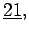
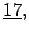
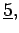

Algebra und Diskrete Mathematik, allgemein
- 5.1
- AIGNER, M.: Diskrete Mathematik.
Verlag Vieweg 1993.
- 5.2
- BELKNER, H.: Determinanten und Matrizen.
Verlag H. Deutsch 1988.
- 5.3
- BURRIS, S.; SANKAPPANAVAR, H. P.: A Course in Universal Algebra.
Springer-Verlag 1981.
- 5.4
- DÖRFLER, W.; PESCHEK, W.: Einführung in die Mathematik für Informatiker.
C. Hanser Verlag 1988.
- 5.5
- EHRIG, H.; MAHR, B.: Fundamentals of Algebraic Specification 1.
Springer-Verlag 1985.
- 5.6
- METZ, J.; MERBETH, G.: Schaltalgebra-- Verlag H. Deutsch 1970.
- 5.7
- WECHLER, W.: Universal Algebra for Computer Scientists.
Springer-Verlag 1992.
- 5.8
- WINTER, R.: Grundlagen der formalen Logik.
Verlag H. Deutsch 1996.
Algebra und Diskrete Mathematik, Gruppentheorie
- 5.9
- ALEXANDROFF, P.S.: Einführung in die Gruppentheorie.
Verlag H. Deutsch 1992.
- 5.10
- BELGER, M., EHRENBERG, L.: Theorie und Anwendungen der Symmetriegruppen.
BSB B. G. Teubner, Leipzig, (MINÖL Bd. 23), 1981; Verlag H. Deutsch (MINÖA Bd. 23), 1981.
- 5.11
- FÄSSLER, A.; STIEFEL, E.: Gruppentheoretische Methoden und ihre Anwendungen.
Birkhäuser-Verlag 1992.
- 5.12
- HEIN, W.: Struktur und Darstellungstheorie der klassischen Gruppen.
Springer-Verlag 1990.
- 5.13
- HEINE, V.: Group Theory in Quantum Mechanics.
Dover, Mineola 1993.
- 5.14
- LIDL, R., PILZ, G.: Angewandte abstrakte Algebra I.
BI-Wissenschaftverlag 1982.
- 5.15
- LUDWIG, W., FALTER, C.: Symmetries in Physics. Group Theory Applied to Physical Problems.
Springer-Verlag 1996.
- 5.16
- MARGENAU, M., MURPHY, G.M.: Die Mathematik für Physik und Chemie.
B. G. Teubner, Leipzig 1964; Verlag H. Deutsch 1965.
- 5.17
- MATHIAK, K., STINGL, P.: Gruppentheorie für Chemiker, Physiko-Chemiker, Mineralogen.
Deutscher Verlag der Wissenschaften 1970.
- 5.19
- STIEFEL, E., FÄSSLER, A.: Gruppentheoretische Methoden und ihre Anwendung.
B. G. Teubner 1979.
- 5.20
- VARADARAJAN, V.: Lie Groups, Lie Algebras and their Representation.
Springer-Verlag 1990.
- 5.21
- VAN DER WAERDEN, B.: Gruppentheoretische Methoden in der Quantenmechanik.
Springer-Verlag 1932.
- 5.22
- WIGNER, E.: Group Theory and its Application to the Quantum Mechanics of Atomic Spectra.
Academic Press 1959.
- 5.23
- WEYL, H.: The Theory of Groups and Quantum Mechanics.
Dover, Mineola 1993.
- 5.24
- ZACHMANN, H.G.: Mathematik für Chemiker.
VCH, Weinheim 1990.
Algebra und Diskrete Mathematik, Zahlentheorie
- 5.25
- BUNDSCHUH, P.: Einführung in die Zahlentheorie.
Springer-Verlag 1992.
- 5.27
- PADBERG, F.: Elementare Zahlentheorie.
BI- Wissenschaftsverlag 1991.
- 5.28
- RIVEST, R.L., SHAMIR, A., ADLEMAN, L.: A Method for Obtaining Digital Signatures and Public Key Cryptosystems.
Comm. ACM  (1978), 12 - 126.
- 5.29
- SCHEID, H.: Zahlentheorie.
BI- Wissenschaftsverlag 1991, 2. Auflage Spektrum Akademischer Verlag 1995.
- 5.31
- SCHULZ, R.: Codierungstheorie.
Verlag Vieweg 2001.
Algebra und Diskrete Mathematik, Kryptologie
- 5.32
- BAUER, F. L.: Kryptologie
Methoden und Maximen. -- Springer-Verlag 1993.
- 5.33
- SCHNEIDER, B.: Angewandte Kryptologie
Protokolle, Algorithmen und Sourcecode in C. -- Addison-Wesley-Longman 1996.
- 5.34
- STINSON, D.: Cryptography. Theory and Practice.
CRC Press Company 2002.
- 5.35
- WOBST, R.: Methoden, Risiken und Nutzen der Datenverschlüsselung.
Addison-Wesley-Longman 1997.
- 5.36
- Data Encryption Standard (DES) - Online Quelle.
- 5.37
- Advanced Encryption Standard (AES) - Online Quelle.
Algebra und Diskrete Mathematik, Graphentheorie
- 5.38
- BIESS, G.: Graphentheorie.
Verlag H. Deutsch 1979.
- 5.39
- EDMONDS, J.: Paths, Trees and Flowers.
Canad. J. Math.  (1965), 449-467.
- 5.40
- EDMONDS, J., JOHNSON, E.L.: Matching, Euler Tours and the Chinese Postman.
Math. Programming  (1973), 88-129.
- 5.41
- NÄGLER, G., STOPP, F.: Graphen und Anwendungen
B. G. Teubner 1995.
- 5.42
- SACHS, H.: Einführung in die Theorie der endlichen Graphen.
B. G. Teubner, Leipzig 1970.
- 5.43
- VOLKMANN, L.: Graphen und Diagraphen.
Springer-Verlag 1991.
Algebra und Diskrete Mathematik, Fuzzy-Logik
- 5.44
- BANDEMER, H., GOTTWALD, S.: Einführung in Fuzzy-Methoden - Theorie und Anwendungen unscharfer Mengen.
Akademie-Verlag, 4. Auflage 1993.
- 5.45
- DRIANKOV, D., HELLENDORN, H., REINFRANK, M.: An Introduction to Fuzzy Control.-- Springer-Verlag 1993.
- 5.46
- DUBOIS, D., PRADE, H.: Fuzzy-Sets and System-Theory and Applications.
Academic Press, Inc., London 1980.
- 5.47
- GOTTWALD, S.: Mehrwertige Logik. Eine Einführung in Theorie und Anwendungen.
Akademie-Verlag, Berelin 1989.
- 5.48
- GRAUEL, A.: Fuzzy-Logik. Einführung in die Grundlagen mit Anwendungen.
B.I. Wissenschaftsverlag, Mannheim 1995.
- 5.50
- KAHLERT, J., FRANK, H: Fuzzy-Logik und Fuzzy-Control. Eine anwendungsorientierte Einführung mit Begleitssoftware.
Verlag Vieweg 1993.
- 5.51
- KRUSE, R., GEBHARDT, J., KLAWONN, F.: Fuzzy-Systeme.
B.G.Teubner 1993.
- 5.53
- PEDRYCZ, W.: Fuzzy Evolutionary Computations. Ch. 2.3.
Kluwer Academic Publishers, Boston 1997.
- 5.56
- ZIMMERMANN, H-J., ALTROCK, C.: Fuzzy-Logik, Bd. 1, Technologie.
Oldenbourg-Verlag 1993.